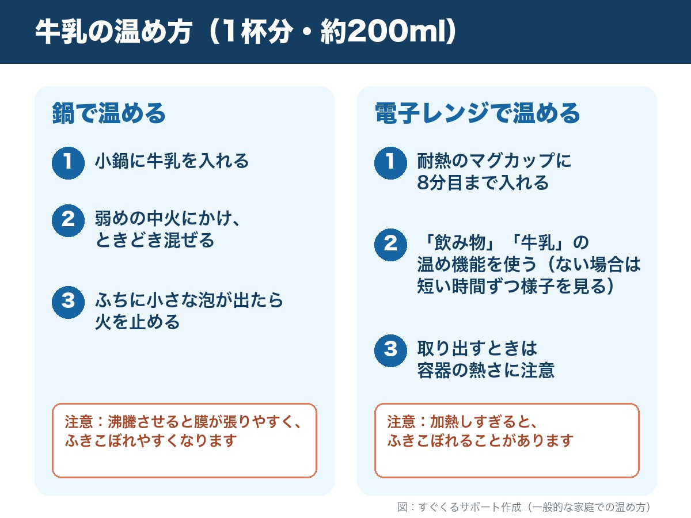

この記事のまとめ：冬の入り口に家庭でできる「牛乳の上手な温め方」と「白菜のミルクスープ」の作り方を、牛乳屋さんの目線で紹介します。鍋で温めるときは沸騰させないこと、電子レンジで温めるときは短い時間ずつ様子を見ることがポイントです。
朝晩の冷え込みが強くなり、日が暮れるのも早くなってきました。毎週地域を回っている牛乳屋さんにとっても、冬じたくの季節です。今回は牛乳屋さんらしく、寒い日に作りたい温かい牛乳の一杯と、手軽なミルクスープのお話です。
牛乳は、鍋なら弱めの中火で沸騰させずに、電子レンジなら短い時間ずつ様子を見ながら温めるのがポイントです。
牛乳は温めすぎると、表面に膜が張りやすく、ふきこぼれやすくなります。鍋でも電子レンジでも、「少しずつ温めて、熱くしすぎない」ことを意識すると失敗しにくくなります。

冬の入り口におすすめなのは、旬の白菜を使った「白菜とベーコンのミルクスープ」です。コンソメと牛乳だけで味が決まり、鍋ひとつで作れます。
| 材料 | 分量 |
|---|---|
| 白菜 | 2枚（約200g） |
| 玉ねぎ | 1/4個 |
| ベーコン | 2枚 |
| 水 | 200ml |
| 顆粒コンソメ | 小さじ1 |
| 牛乳 | 200ml |
| 塩・こしょう | 少々 |
牛乳を入れたあとに強火で煮立てると、分離したり、ふきこぼれたりしやすくなります。牛乳は最後に加えて、弱火で温めるのがコツです。白菜の代わりに、じゃがいもやかぼちゃ、ほうれん草など、冷蔵庫にある冬の野菜でも作れます。
寒くなる前に見ておきたいのは、暖房に使うエアコン、年末に向けた換気扇、日が短くなる季節の照明、そして暖房器具まわりの家具の配置です。
脚立にのぼる作業や重い家具の移動は、無理をせず、家族や身近な人に手伝ってもらいましょう。
A. 牛乳を温めすぎると、表面に膜が張りやすくなります。鍋なら弱めの中火で、ときどき混ぜながら温め、鍋のふちに小さな泡が出てきたら火を止めるのがコツです。
A. 一度に長く温めず、短い時間ずつ様子を見ながら温めてください。温め機能がある電子レンジは、その機能を使うと失敗しにくくなります（使い方は取扱説明書で確認してください）。取り出すときは、カップも熱くなっているので注意しましょう。
A. 牛乳を入れたあとに強火で煮立てると、分離したり、ふきこぼれたりしやすくなります。牛乳は最後に加えて、弱火で温めるのがコツです。
この記事は、名古屋市西区の牛乳屋さんの便利屋「すぐくるサポート」が書いています。冬じたくでお困りのことがあれば、こちらからお気軽にどうぞ。